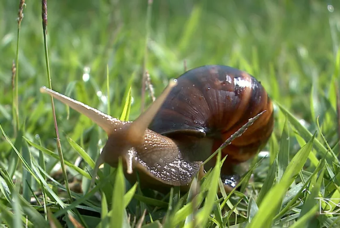

Caracol-gigante-africano
Introdução
O caracol-gigante-africano é um molusco da classe dos gastrópodes. Pertence à subfamília dos acatiníneos da família dos acatinídeos. Possui concha cônica marrom ou mosqueada de tons claros.
Origem
Introduzido no País na década de 1980 para criação alternativa ao escargot. O fracasso das tentativas de comercialização levou os criadores a soltar os caracóis no ambiente. Reproduz-se rapidamente e em grande quantidade. Dispersou-se amplamente, podendo ser encontrado em praticamente todo o Brasil. Invasora nos Estados Unidos, na China, na Martinica, na França, nas Ilhas Maldivas, nas Filipinas e na Austrália. Considerada uma das 100 piores espécies invasoras do mundo.
Causas e efeitos
Predador de plantas e competidor por espaço com outras espécies, em função do aumento populacional acelerado. A espécie ataca praticamente qualquer lavoura, causando prejuízos econômicos. Também compete com espécies nativas em ambientes florestais. É vetor de 2 vermes que transmitem doenças: Angiostrongylus costaricensis, causador da angiostrongilíase abdominal; e Angiostrongylus cantonensis, causador da angiostrongilíase meningoencefálica humana.
Prevenção
Por controle químico: O controle químico com moluscicidas não é recomendado em função da não especificidade e da elevada toxicidade desses produtos, a menos que se faça uso muito restrito e em áreas controladas. Pode-se, com os devidos cuidados, usar iscas moluscicidas ou iscas das plantas preferidas por eles, umedecidas e colocadas perto de pontos que servem como refúgio para os caramujos no fim da madrugada (borda de florestas e brejos, montes de palha grossa, montes de telhas e madeiras emborcadas) onde devem ser coletados pela manhã com os devidos cuidados e incinerados. Por controle biológico: A introdução de outros caramujos como agentes de controle biológico de Achatina fulica foram mal sucedidas e geraram graves impactos a espécies nativas nas ilhas do Pacífico. A introdução de Euglandina rosea como agente de controle biológico mostrou-se tão ou mais danosa quanto a introdução de Achatina fulica e não deve ser realizada sob nenhuma hipótese, pois é um predador de muitas outras espécies de caramujos.